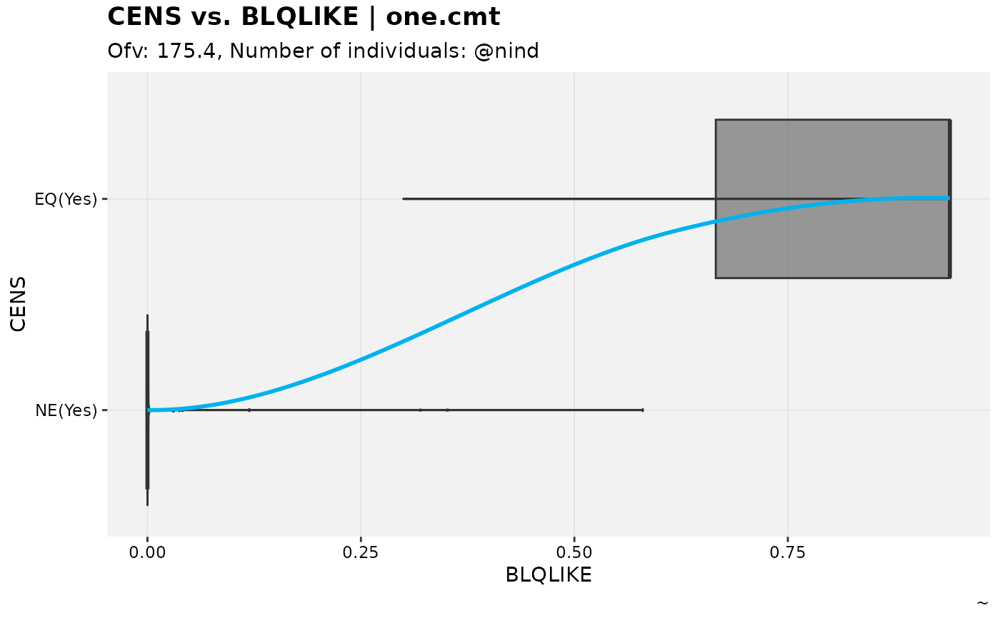

A modified version of the theophylline model fit with censoring added in to provoke M3 censoring. An additional output variable is added to use an an example in categorical DVs.
Examples
if (FALSE) { # \dontrun{
# This not-run block is to show how the dataset was generated
# This is also available in data-raw of the github repo
one.cmt <- function() {
ini({
## You may label each parameter with a comment
tka <- 0.45 # Ka
tcl <- log(c(0, 2.7, 100)) # Log Cl
## This works with interactive models
## You may also label the preceding line with label("label text")
tv <- 3.45; label("log V")
## the label("Label name") works with all models
eta.ka ~ 0.6
eta.cl ~ 0.3
eta.v ~ 0.1
add.sd <- 0.7
})
model({
ka <- exp(tka + eta.ka)
cl <- exp(tcl + eta.cl)
v <- exp(tv + eta.v)
# Not sure how one does this with linCmt(), if that has to be posthoc
d/dt(depot) = -ka*depot
d/dt(cent) = ka*depot - cl*cent/v
cp = cent/v
blqlike = pnorm( (LLOQ - cp)/add.sd ) # blq likelihood for diagnostics
cp ~ add(add.sd)
})
}
theo_sdcens=nlmixr2data::theo_sd
good_lloq <- quantile(theo_sdcens[theo_sdcens$EVID==0,]$DV, 0.15)
theo_sdcens$CENS=ifelse(theo_sdcens$DV<good_lloq & theo_sdcens$EVID==0,1,0)
theo_sdcens$DV=ifelse(theo_sdcens$CENS==1,good_lloq,theo_sdcens$DV)
theo_sdcens$LLOQ=good_lloq # add lloq column
fitcens <- nlmixr2est::nlmixr2(one.cmt, theo_sdcens, "focei",
control=nlmixr2est::foceiControl(print=0))
nlmixr2_m3 <- nlmixr2_as_xtra(obj = fitcens, .skip_assoc = TRUE)
} # }
nlmixr2_m3 %>% # modified from catdv_vs_dvprobs example
set_var_types(catdv=CENS,dvprobs=BLQLIKE) %>%
set_dv_probs(1, 1~BLQLIKE, .dv_var = CENS) %>%
set_var_levels(1, CENS = lvl_bin()) %>%
catdv_vs_dvprobs(xlab = "basic", quiet = TRUE)
#> Warning: nind is not part of the available keywords. Check ?template_titles for a full list.
#> `geom_smooth()` using method = 'loess' and formula = 'y ~ x'
